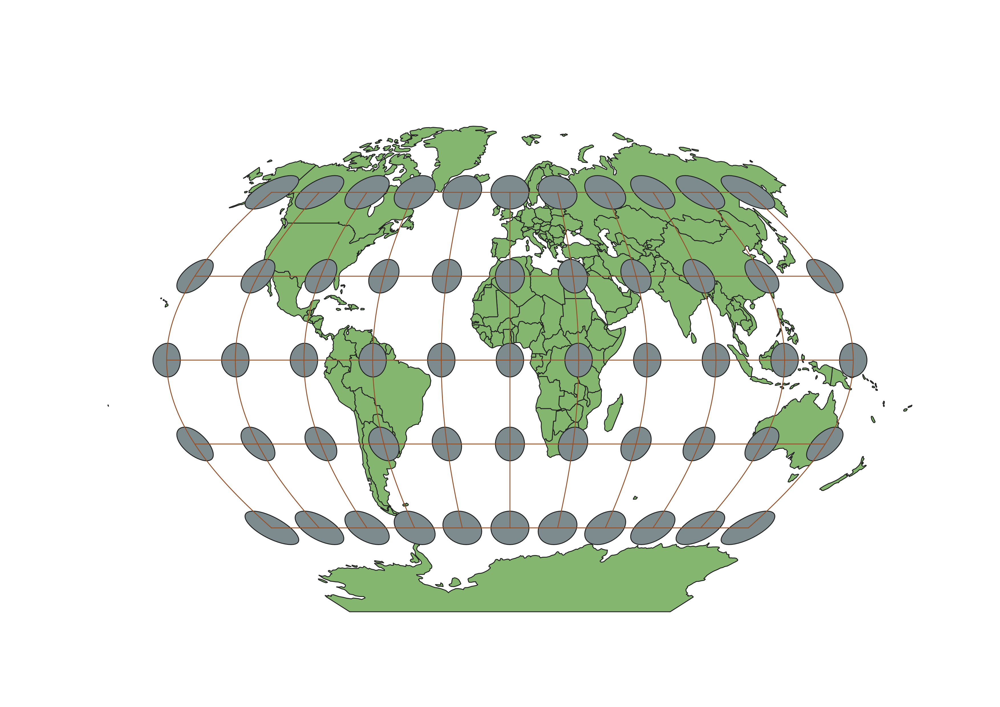

In this project I learned how to display images in different projections
Describe in your own words how you displayed the map in different projections using QGIS
To display the maps in different projections using QGIS, I downloaded the given data and needed projections. From here I continued to look up different projections we were taught in class to develop an understanding of what each projection looked like.
WGS84 Projection
This map showed that around the poles, it was a lot more squished than what shows up on a globe.

Aitoff Projection
This projections fails to keep area the same as seen on a globe.

Pseudo-Mercator Projection
The shape of the poles have been distorted in this projection.
Sphere Robinson Projection
The projecyion distorts the shapes and area of the continents.
Sphere Sinusoidal Projection
This projection gave accurate sizes, but distorted the directions and shapes.
World Loximuthal Projection
This projection has stretched out the continents leading to sizes that are not accurate.

Sphere Winkel Projection
This projection is stretched vertically leaving error in the correct sizing of the continents.

World Equidistant Conic Projection
This projection was very confusing at first glance. However, it looks at it from a conic point of view which is why the middle is small and as you move out it grows in size.
North Pole Azimuthal Projection
This projection like the last one takes a look from the North Pole point of view. They look very similar, but this projection reaches around further.

Data used for this project
Download Natrual Earth 1:10m Cultural Vector